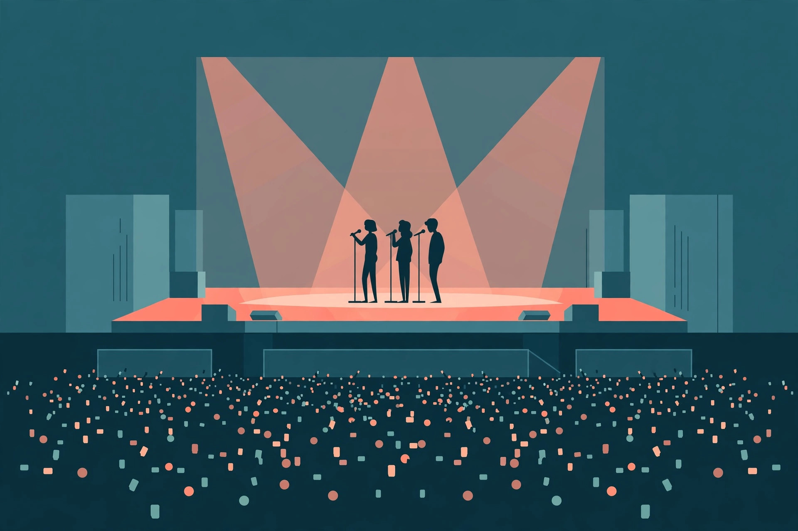

11月20日放送のMステで、インフルエンザの大森元貴（Mrs. GREEN APPLE）の出演見合わせを受け、急きょ代打としてヒット曲「NON STOP」を追加披露。新曲「Slidin」もテレビ初披露した。称賛の声が広がる一方、Threadsでは歌詞のFlex（自慢）への反感やファン同士の言い合いも見える。
インフルエンザで療養中の大森元貴がファンクラブのコンテンツでメッセージを更新。11月18日の公式発表でMステ出演の見合わせと長野公演の延期が伝えられていた。
Qoo10メガ割でのアヌア商品購入時にアクセス集中による待機や決済遅延が発生。決済は23時59分まで延長されたが、「1時間待ったのに売り切れ」という不満の声も広がる。メガ割2日目。
11月20日の山梨県民の日に、富士急行創立100周年を記念してワンデイパスが山梨県民限定で無料に。事前申請は約1万人で、園内は大混雑。「入るまでに何時間かかるんだろ」という実況と「無料はありがたい」という感謝の声が並ぶ。
2026 MAMA AWARDSが11月20日・21日に京セラドーム大阪で開幕。CHAPTER 1は11月20日、CHAPTER 2は11月21日で、司会はパク・ボゴム。MnetとMnet Smart+で生中継される。1日目はRESCENEがBEST OF NEXTを受賞した。
メガ割2日目。MEGA POPUPが本日11月21日から原宿で始まり（11月21日〜12月2日）、AnuaやメディキューブのブースでPRESENT TICKETと引き換えにサンプルがもらえ、SNS投稿でルーレットを回して「MEGA KIT」が当たる様子を紹介するリールが並ぶ。ブランド別の日程・割引率を一覧化した「買い物リスト化」のカルーセル（Anua最大63%オフ、メディキューブ60〜61%オフ、numbuzin 54〜63%オフ）も2日目も継続。BiodanceのキャビアPDRNセット56%オフ（5,390円）の紹介リールも出ている。
今日11月21日16:30に日産スタジアムで初のスタジアムツアー「MILESixTONES」ファイナル初日。21日・22日の両日とも14:30開場・16:30開演で、新横浜駅周辺の混雑も報じられている。チケットの譲渡募集も多く出ている。昨日はアルバム発表と重なった初日前日の期待の声が中心だった。
HANAのFlex歌詞への反感
「巨大資本事務所のお膝元でやるFlexは確かにただのマウントに聞こえる」「良い子たちなんだから背伸びして誰かの書いたflexなんかしない方がいい」とつづる投稿。
代打の称賛とは別に、歌詞の内容そのものへの違和感が語られている。応援しているからこそ「背伸びしなくていい」という、守りたい気持ちの裏返しにも見える。
HANAのファンへの批判
「HANAがボコスコに叩かれててうーんって感じ。HANAがキモいんじゃなくて、HANAのファンが痛くてキモいの間違いでは？」とつづる投稿（568 likes、53件の返信）。スタイリングや照明への不満も並ぶ。
本人への批判とファンの振る舞いへの批判が分けられて語られている。叩かれる理由が「本人」か「周り」かで意見が割れている。
アヌアの売り切れへの不満
「20時ジャストからLIVEみてて、1時間も待って購入できると思ったら売り切れ？？？？なんのために1時間待ったん？」とつづる投稿（117 likes、42件の返信）。「買えた報告しか流れてこない」という一文も。
待機の長さと売り切れの落差が、不満の核心になっている。「買えた報告しか流れてこない」という一文が、買えなかった側の孤立感を表している。
アヌアのLIVE特典への疑問
「アヌアのメガ割やっと買えたけどこれだとLIVE特典もらえないのかな」とつづる投稿。
買えたあとにも「特典がもらえるのか」という疑問が残る。セールの仕組みが分かりにくい部分が、買ったあとの不安として出ている。
富士急ハイランドの激混み実況
「富士急激混み！ここ最近でこんなに人が並んでるの久々かも。入るまでに何時間かかるんだろ」「山梨県民無料はありがたい」とつづる投稿（206 likes、28件の返信）。
無料への感謝と混雑への驚きが同居している。並ぶ時間そのものが「久々」という実感とともに語られ、無料開放の規模が伝わる。
富士急に行くか迷う質問
「山梨は県民の日。ただいま13:00前。今から富士急行こうと思うけど、、、混んでてやばい？みんなどうでしょうか？」とつづる投稿。
午後の時点で「今から行っても大丈夫か」を尋ねる動き。混雑の実況が、行くか迷っている人の判断材料として使われている。
Qoo10 MEGA POPUPの体験リール
原宿のMEGA POPUPでAnuaやメディキューブのブースを回り、PRESENT TICKETでサンプルをもらい、SNS投稿でルーレットを回して「MEGA KIT」を当てる様子を紹介するリール。
セールのオンラインの買い物リスト化とは別に、ポップアップでの「もらう・当てる」体験がコンテンツになっている。無料でもらえるものと、抽選で当たるものの二つの楽しみが並走している。
Qoo10メガ割の買い物リスト
Anua最大63%オフ、メディキューブ60〜61%オフ、numbuzin 54〜63%オフなどを並べた9枚カルーセル。
セール2日目も「買い物リスト化」が続いている。ブランドごとの割引率を一枚にまとめることで、買う前の目星つけの道具になっている。
富士急のサンリオパラダイス紹介リール
11月14日に新オープンした「サンリオパラダイス」エリアを家族で回る様子を紹介するリール。
県民の日の無料開放とは別に、新エリアの開業が家族連れの関心を集めている。無料の日と新エリアの開業が重なり、行く理由が二重になっている。
代打への称賛とは別に、歌詞のFlex（自慢）への反感と、HANAファンとXGファンの言い合いが目立つ。「HANAがキモいんじゃなくて、HANAのファンが痛くてキモい」という、本人とファンの振る舞いを分けて語る声も出ている。スタイリングや照明への不満も並ぶ。
Qoo10メガ割でのアヌア購入時にアクセス集中による待機や決済遅延が発生し、「1時間待ったのに売り切れ」という不満の声が広がる。決済は23時59分まで延長されたが、「買えた報告しか流れてこない」という、買えなかった側の孤立感の語りも出ている。
HANA＝代打への称賛と批判の温度差、アヌア＝待機・売り切れへの不満と延長の告知、富士急＝無料への感謝と混雑の実況、MAMA＝開幕への期待と投票・配信の呼びかけ、Qoo10＝買い物リスト化とポップアップ体験の共有、SixTONES＝初日への期待。
HANAはガールズグループのファン層と音楽関心層、大森元貴はMrs. GREEN APPLEファン層（女性寄りの印象）、アヌアは韓国コスメ・Qoo10利用層（女性寄りの印象）、富士急は山梨在住・家族連れ層、MAMAはK-POPファン層、Qoo10は引き続き韓国コスメ・Qoo10利用層（女性寄りの印象）、SixTONESはファン層（女性寄りの印象）。統計ではなく印象。
HANAの代打では、称賛の声が広がる一方で、歌詞のFlexへの反感やファン同士の言い合いも同じタイミングで可視化されている。注目の集まる場面では、称賛と批判が同時に拡散しやすく、本人への評価とファンの振る舞いへの評価が分けられて語られる。アヌアのメガ割では、アクセス集中による待機と売り切れへの不満が強く、決済の延長が告知される一方で「買えた報告しか流れてこない」という買えなかった側の孤立感も出ている。待機の見通しや再販の有無を早めに示すと、不満の拡散を抑えやすい。富士急の県民無料では、感謝と混雑の実況が同時に広がっており、事前申請の仕組みがあっても当日の混雑の実況そのものが話題になる。入場までの待ち時間の目安が分かると、行くか迷っている人の判断がしやすい。
示唆 1. 代打の急きょ追加披露は「対応力」として称賛を集めるが、同時に歌詞やファンの振る舞いへの反感も可視化される。注目の集まる場面では、称賛と批判が同じタイミングで拡散し、本人への評価とファンの振る舞いへの評価が分けられて語られる。
示唆 2. セールのアクセス集中では、待機や決済遅延への不満が「1時間待ったのに売り切れ」という形で広がる。延長や再販の見通しを早めに示すことが、不満の拡散を抑える接点になる。オンラインの買い物リスト化と並走して、ポップアップでの「もらう・当てる」体験がコンテンツ化している。
示唆 3. 地域の無料開放は「県民の日」という記念日と結びつくと、感謝と混雑の実況が同時に広がる。事前申請の仕組みがあっても、当日の混雑の実況そのものが話題になり、入場までの待ち時間の目安が、行くか迷っている人の判断材料になる。